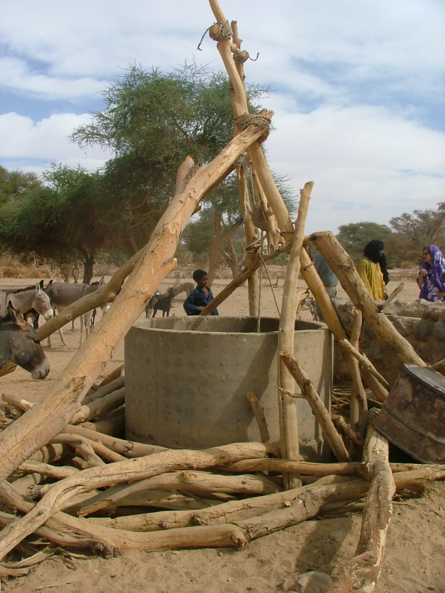
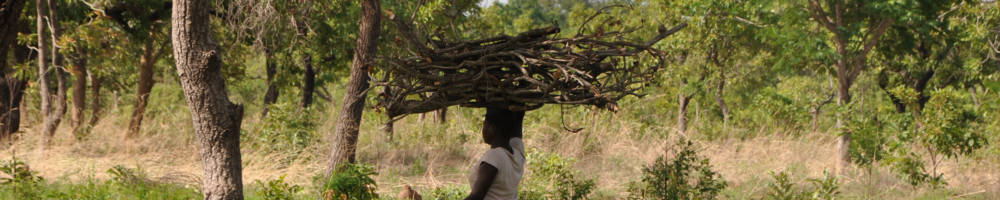

Background

Sub-Saharan Africa is rapidly urbanizing and experiencing accelerated economic growth. Yet the number of people living in extreme poverty remains distressingly high. Moreover, growing empirical evidence on poverty traps suggests persistence in extreme poverty, especially among those living in rural areas and working in agriculture. Harnessing the gains from growth and development for the alleviation of rural poverty requires boosting the productivity of land, labor, and other agricultural inputs through improved technology adoption and the elimination of factors that constrain investment, the efficient use of resources, and risk mitigation. Recently available household- and individual-level data sources, such as the Living Standards Measurement Study-Integrated Surveys on Agriculture (LSMS-ISA), present new possibilities to understand the opportunities and constraints facing rural households and learn from recent experiences. New micro-level insights based on rigorous research using high quality data can guide the emerging macro-level policy discourse around the structural transformation of African economies, and especially of African agriculture and the continent’s rural spaces.
Conference

Cornell University, in partnership with the African Development Bank (AfDB), the African Economic Research Consortium (AERC), the Partnership for Economic Policy (PEP), and the World Bank held a conference on the Structural Transformation of African Agriculture and Rural Spaces, on December 4-5, 2015 in Addis Ababa, Ethiopia.
This event brought together top-tier researchers from around the world and high-level policymakers to advance the dialogue on structural transformation in Sub-Saharan Africa and improve the feedback between the researchers who produce and analyze data and the policymakers who rely on timely and high quality research to improve decisions.
The conference produced a special issue of World Development and a special issue of Agricultural Economics, both forthcoming.
Organizing Committee
- Prof. Lemma Senbet, University of Maryland and Executive Director, African Economic Research Consortium
- Prof. Chris Barrett, Cornell University
- Dr. Luc Christiaensen, Africa Region, World Bank
- Dr. Bekele Shiferaw, Executive Director, Partnership for Economic Policy
- Dr. Abebe Shimeles, Development Research Division, African Development Bank
- Dr. Witness Simbanegavi, Director of Research, African Economic Research Consortium